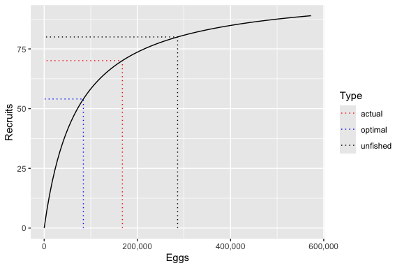

Introduction
ypr is an R package that implements equilibrium-based yield per recruit methods. Yield per recruit methods can used to estimate the optimal yield (Walters and Martell 2004) of a fish population with one or more ecotypes. The yield can be based on the number of fish caught (or harvested) or biomass for all fish or just large (trophy) individuals.
The key life history parameters are
- The growth coefficient (
k) and mean maximum length (Linf) from the Von Bertalanffy growth curve - The length at which 50% mature (
Ls) - The length at which 50% vulnerable to harvest (
Lv) - The interval annual natural mortality rate (
n) - The lifetime number of spawners per spawner at low density (
Rk)
and in the case of ecotypes
- The relative proportion of recruits that belong to that ecotype (
RPR)
The calculations do not account for stochasticity, predator-prey dynamics, angler responses or density-dependent growth.
Installation
To install the latest release from CRAN
install.packages("ypr")To install the developmental version from GitHub
# install.packages("remotes")
remotes::install_github("poissonconsulting/ypr")Demonstration
Schedule
library(ypr)
population <- ypr_population(Rk = 5, Ls = 50, Rmax = 100, rho = 0.6)
ypr_plot_schedule(population, x = "Length", y = "Spawning")
ypr_tabulate_schedule(population)
#> # A tibble: 20 × 11
#> Age Length Weight Fecundity Spawning NaturalMortality Vulnerability
#> <int> <dbl> <dbl> <dbl> <dbl> <dbl> <dbl>
#> 1 1 13.9 27.0 27.0 3.13e-56 0.2 3.13e-56
#> 2 2 25.9 174. 174. 2.91e-29 0.2 2.91e-29
#> 3 3 36.2 476. 476. 1.04e-14 0.2 1.04e-14
#> 4 4 45.1 918. 918. 3.46e- 5 0.2 3.46e- 5
#> 5 5 52.8 1469. 1469. 9.95e- 1 0.2 9.95e- 1
#> 6 6 59.3 2090. 2090. 1.00e+ 0 0.2 1.00e+ 0
#> 7 7 65.0 2747. 2747. 1.00e+ 0 0.2 1.00e+ 0
#> 8 8 69.9 3412. 3412. 1.00e+ 0 0.2 1.00e+ 0
#> 9 9 74.1 4065. 4065. 1 e+ 0 0.2 1 e+ 0
#> 10 10 77.7 4689. 4689. 1 e+ 0 0.2 1 e+ 0
#> 11 11 80.8 5274. 5274. 1 e+ 0 0.2 1 e+ 0
#> 12 12 83.5 5816. 5816. 1 e+ 0 0.2 1 e+ 0
#> 13 13 85.8 6310. 6310. 1 e+ 0 0.2 1 e+ 0
#> 14 14 87.8 6758. 6758. 1 e+ 0 0.2 1 e+ 0
#> 15 15 89.5 7160. 7160. 1 e+ 0 0.2 1 e+ 0
#> 16 16 90.9 7518. 7518. 1 e+ 0 0.2 1 e+ 0
#> 17 17 92.2 7836. 7836. 1 e+ 0 0.2 1 e+ 0
#> 18 18 93.3 8116. 8116. 1 e+ 0 0.2 1 e+ 0
#> 19 19 94.2 8363. 8363. 1 e+ 0 0.2 1 e+ 0
#> 20 20 95.0 8580. 8580. 1 e+ 0 0.2 1 e+ 0
#> # … with 4 more variables: Retention <dbl>, FishingMortality <dbl>,
#> # Survivorship <dbl>, FishedSurvivorship <dbl>Fish
ypr_plot_fish(population, color = "white")
ypr_tabulate_fish(population)
#> # A tibble: 20 × 7
#> Age Survivors Spawners Caught Harvested Released HandlingMortalities
#> <dbl> <dbl> <dbl> <dbl> <dbl> <dbl> <dbl>
#> 1 1 70.1 2.19e-54 4.39e-55 1.76e-55 2.63e-55 0
#> 2 2 56.1 1.63e-27 3.26e-28 1.30e-28 1.96e-28 0
#> 3 3 44.9 4.68e-13 9.36e-14 3.74e-14 5.62e-14 0
#> 4 4 35.9 1.24e- 3 2.48e- 4 9.93e- 5 1.49e- 4 0
#> 5 5 28.7 2.86e+ 1 5.72e+ 0 2.29e+ 0 3.43e+ 0 0
#> 6 6 21.1 2.11e+ 1 4.23e+ 0 1.69e+ 0 2.54e+ 0 0
#> 7 7 15.6 1.56e+ 1 3.11e+ 0 1.24e+ 0 1.87e+ 0 0
#> 8 8 11.5 1.15e+ 1 2.29e+ 0 9.16e- 1 1.37e+ 0 0
#> 9 9 8.43 8.43e+ 0 1.69e+ 0 6.74e- 1 1.01e+ 0 0
#> 10 10 6.20 6.20e+ 0 1.24e+ 0 4.96e- 1 7.44e- 1 0
#> 11 11 4.57 4.57e+ 0 9.13e- 1 3.65e- 1 5.48e- 1 0
#> 12 12 3.36 3.36e+ 0 6.72e- 1 2.69e- 1 4.03e- 1 0
#> 13 13 2.47 2.47e+ 0 4.95e- 1 1.98e- 1 2.97e- 1 0
#> 14 14 1.82 1.82e+ 0 3.64e- 1 1.46e- 1 2.18e- 1 0
#> 15 15 1.34 1.34e+ 0 2.68e- 1 1.07e- 1 1.61e- 1 0
#> 16 16 0.986 9.86e- 1 1.97e- 1 7.89e- 2 1.18e- 1 0
#> 17 17 0.726 7.26e- 1 1.45e- 1 5.81e- 2 8.71e- 2 0
#> 18 18 0.534 5.34e- 1 1.07e- 1 4.27e- 2 6.41e- 2 0
#> 19 19 0.393 3.93e- 1 7.86e- 2 3.15e- 2 4.72e- 2 0
#> 20 20 0.289 2.89e- 1 5.79e- 2 2.31e- 2 3.47e- 2 0Stock-Recruitment
ypr_plot_sr(population)
ypr_tabulate_sr(population)
#> # A tibble: 3 × 7
#> Type pi u Eggs Recruits Spawners Fecundity
#> <chr> <dbl> <dbl> <dbl> <dbl> <dbl> <dbl>
#> 1 unfished 0 0 286350. 80 159. 3600.
#> 2 actual 0.2 0.08 167831. 70.1 108. 3112.
#> 3 optimal 0.458 0.183 84129. 54.0 63.7 2641.Yield
ypr_tabulate_yield(population)
#> # A tibble: 2 × 8
#> Type pi u Yield Age Length Weight Effort
#> <chr> <dbl> <dbl> <dbl> <dbl> <dbl> <dbl> <dbl>
#> 1 actual 0.2 0.08 8.63 7.67 65.8 3112. 2.12
#> 2 optimal 0.458 0.183 11.7 6.87 62.6 2641. 5.82
ypr_plot_yield(population)
Information
For more information see the Get Started vignette.
Interaction
To interactively explore the effects of altering individual parameters on the schedule, stock-recruitment and yield see the ypr shiny app.
A screenshot of the yield from the ypr shiny app
Creditation
Development of ypr was partially supported by the Habitat Conservation Trust Foundation and the Ministry of Forests, Lands and Natural Resource Operations.
The hex was designed by The Forest.
Code of Conduct
Please note that the ypr project is released with a Contributor Code of Conduct. By contributing to this project, you agree to abide by its terms